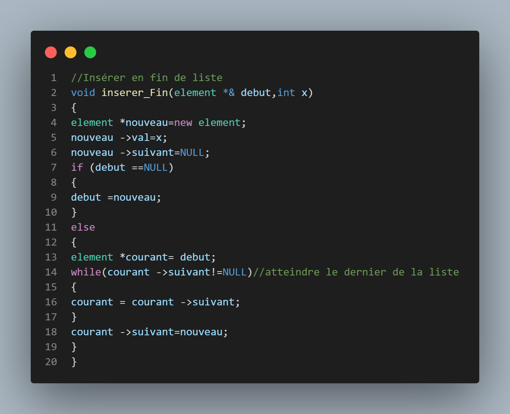

Les listes:
Introduction
1
Une liste linéaire chainée en C++ est une structure de données qui consiste enune suite d'éléments, où chacun de ces éléments pointe vers le suivant.
Chaque élément est appelé nœud et contient une valeur et une référence au nœud suivant.La dernière référence est généralement nulle pour indiquer la fin de la liste.
Les listes linéaires chainées permettent des insertions et des suppressions faciles en n'importequel point de la liste et sont souvent utilisées pour implémenter des piles, des files oudes graphes.
Cependant, l'accès à un élément spécifique dans la liste peut être lentpar rapport à d'autres structures de données telles que les tableaux, car il nécessitede parcourir la liste depuis le début.
fonction initialiser
2
Permet d'initialiser notre pointeur debut a 0, une étape nécessaire pour la création d'une liste.

fonction insérer début
3
cette fonction permet de créer un element, et de l'insérer au début de notre liste, son pointeur suivant pointera donc vers l'élement qui était au début(si il existe) et notre pointeur début pointera dessus

fonction insérer fin
4
Permet la création d'un élement et son insértion a la toute fin de la liste, son pointeur suivant égalera donc 0; contrairement a insererdebut, il faut parcourir toute la liste en utilisant un element local courant jusqu'a arriver a la fin; Dans le cas d'une liste vide, insererdebut sera utilisé.
fonction parcours
5
Nous permet d'afficher les valeurs stockées dans notre liste, utilise le méme principe que insererfin pour le parcours(utilisation d'un element courant) et a chaque itération affiche la valeur

L'avantage des listes comparé aux tableaux, c'est la possibilité de facilement supprimer des élements peu importe leur emplacement, sans décalage obligatoire.
fonction supp début
6
Si notre liste contient au moins un élement, on sauvegarde la valeur de début dans une nouvelle variable, on pointe debut vers le prochain élement si il existe, puis on supprime avec delete la variable sauvegardée.
fonction supp fin
7
Sert à supprimer le dernier élément d'une liste, en commençant par la parcourir jusqu'a arriver a l'element dont le suivant->suivant=0 (l'avant dernier element), on supprime le dernier élément avec delete element->suivant, puis on modifie le pointeur suivant du dernier en le mettant a 0.
Remarque
8
insererdebut est beacoup plus optimisé que insererfin, car il permet de directement insérer sans parcourir toute la liste, et dans le cas d'une liste de + de 100 élements par exemeple, beacoup de resources seront utilisées pour le parcours.
Les piles
Introduction
1
Les piles fonctionnent sous un système FILO(first in last out) premier inséré, dernier supprimé.
On a deux méthodes pour représenter une pile :
1_Contiguë(Par tableaux)
2_Par liste chainée
La représentation contiguë sera utilisée dans nos exemples.
fonction initialiser
2
Initialise notre valeur sommet a 0, et ça pour avoir une pile vide et pour pointer au premier élément de notre tableau.
.png)
fonction pile vide
3
Cette fonction a retour booléen permet de vérifier si notre pile est vide, en se servant du sommet ,1 si notre sommet=0, 0 sinon.Elle sera utilisée dans la fonction dépiler.
fonction empiler
4
On vérifie d'abord si notre pile est pleine, en comparant notre sommet avec la dimension max, si elle est pleine on ne fait rien, sinon on insère notre élément a l'adresse Sommet du tableau P.element, et on incrémente notre sommet.
$fonction dépiler
5
On vérifie d'abord si notre pile est pleine, en comparant notre sommet avec la dimension max, si elle est pleine on ne fait rien, sinon on insère notre élément a l'adresse Sommet du tableau P.element, et on incrémente notre sommet.
fonction afficher
6
Pour afficher une pile, il suffit simplement de juste défiler et d'afficher à chaque itération l'élément sauvegardé.
Remarque
7
Il est recommandé de faire un transfert par valeur pour l'affichage si l'exercice utilisera la pile dans d'autres questions, et ça pour conserver les valeurs
Les files:
Introduction
1
Concernant les files, elles fonctionnement sous le système FIFO (first in first out) ou le premier élément inséré sera le premier élément supprimé.
Les mêmes méthodes de représentation des piles s'appliquent sur les files.
La structure d'une file est quasi_similaire à la pile, à la différence qu'on a renommé Sommet en nbr_valeurs, et la fonction enfiler change presque complétement.
fonction initialiser
2
Tout comme l'initialisation de la pile, il suffit juste d'initialiser notre valeur nbr_valeurs a 0.
fonction file vide
3
Pour tester si notre file est vide, il suffit simplement de voir si notre nbr_valeurs=0 ou non.
fonction enfiler
4
Exactement comme la fonction empiler, on vérifie si la file est vide, on insère notre élément dans l'adresse nbr_valeurs du tableau, et on l'incrémente.
fonction defiler
5
Suis le principe de suppression d'un élément du tableau; on commence par vérifier si la file est vide avec 'filevide', on sauvegarde le premier élément du tableau(donc f.element[0]) puis en entre dans une boucle allant de 0 jusqu'à f.nbr_valeurs-1, et ça pour décaler toute nos valeurs de 1( la 2emedeviendra la 1ere, 3eme 2eme etc....) et pour finir on décrémente notre nbr_valeurs.
Comme on peut le voir, c'est assez complexe de défiler un élément d'une file, dus au fait qu'on doit tout décaler à chaque fois, pour remédier à ce problème, une autre structure peut être utilisée qui est La File Circulaire./p>
Files circulaires
6
Contrairement à la file normale, la file circulaire dispose de 4 variables dans sa structure, le tableau f.element, l'entier IndiceIN, l'entier IndiceOUT, et le booléen FilePleine
.png)
fonction initialiser
7
La fonction initialiser aura pour objectif de fixer nos 2 variable indiceIN, indiceOUT a 0, ainsi que FilePleine a faux.
fonction file vide
8
2 conditions sont nécessaires pour savoir si une file est vide, lorsque IndiceIN=IndiceOUT et FilePleine est faux; (plus d'explications dans les fonctions enfiler et défiler)
fonction enfiler
9
Pour enfiler, il faut d'abord vérifier si la file est pleine, et ça seulement en utilisant notre bool filePleine, ensuite on enfile comme une file normale, avec IndiceIN faisant le même travail que nbr_valeurs, on remarque 2 changements: à l'incrémentation on incrémente IndiceIN et on on utilise modulo(reste de la division) avec la dimension max, cette étape additionnelle permet à l'indiceIN de revenir à 0 lorsque la file est pleine car circulaire; et une condition qui fixe le bool FilePleine a 1 si IndiceIN=IndiceOUT après l'enfilement.
.png)
fonction defiler
10
Pour défiler, on vérifie si la file est vide avec filevide, si non, on sauvegarde l'élément a l'indice IndiceOUT du tableau, et on incrémente l'IndiceOUT de la même manière qui IndiceIN(+1 et modulo dimension max); On fixe aussi FilePleine a faux car on a défilé, il y aura forcément au moins un espace vide dans la file après défilement.
.png)
Les arbres:
Introduction
1
Un arbre binaire de tri ou de recherche, est une liste chainée composée de plusieurs éléments nommées nœuds, chaque nœud contient une clé(valeur), une adresse pointant vers un élément dont sa clé est inférieure(petit), et un autre dont son élément est supérieur(grand). Le premier nœud ajouté sera nommé Racine, et chaque nœud après sera une feuille.
La structure d'un arbre de tri est ordonnée de tel que chaque élément à gauche de la racine est inférieur à celle-ci, et chaque élément à droite est supérieure. Aucun doublon ne peut exister dans un arbre.
Fonction initialiser
2
Tout comme les listes chainées, cette fonction permet d'initialiser notre premier élément(la racine) a 0.
Fonction insert
3
Une fonction récursive permettant d'insérer un élément dans notre arbre, si la racine égale à 0, on créera un nouvel élément avec la clé donnée par l'utilisateur, et on l'insère a la racine; sinon, on parcourt à droite ou à gauche dépendant de notre valeur, vu que notre arbre est un arbre de tri, si la valeur donnée est inférieure à la racine, on insère à gauche(a->petit), sinon on insère à droite(a- >grand) si c'est supérieur; On n'insère pas dans le cas de l'égalité.
Fonction chercher
4
Suis le même principe que la fonction insert, sauf qu'ici notre objectif est de trouver l'emplacement d'une valeur donnée si elle existe, On compare la valeur avec la clé de la racine, si elles sont égales, on sauvegarde l'adresse de la valeur dans une variable(ici nommée position); sinon si la valeur est inférieure à la clé, on appelle la fonction avec ->petit, sinon si elle est supérieure on l'appelle avec - >grand
Parcours
5
La traversée d'un arbre de tri on peut la faire à différents niveaux, mais généralement 3 types de traversée sont utilisés (préfixe, infixe, suffixe) :
1-Préfixé:
On affiche notre arbre en commençant par la racine, puis en passant au fils gauche puis droit (RGD- VGD ); le cout sera donc avant les deux appel.
2-Infixé:
On affiche les fils gauche, la racine, puis les fils droit, en d'autres termes, permet d'afficher nos valeurs du plus petit au plus grand(GRD-GVD); le cout sera au milieu des deux appel.
3-Postfixé:
Affichera les fils gauche, puis droit, pour finir avec la racine(GDR-GDV). Le cout sera à la fin des deux appel
Fonction affichage
6
Afin d'afficher l'arbre selon un ordre spécifique, comme par exemple dans l'ordre croissant, nous pouvons écrire la ligne cout dans la position infixe, comme cela est indiqué dans le code. Cela permettra d'afficher l'arbre de manière précise et selon l'ordre souhaité.
Remarque
7
La traversée d'un arbre de tri est toujours codée de la même manière, il suffi de placer les instructions nécessaires et selon l'ordre voulu.